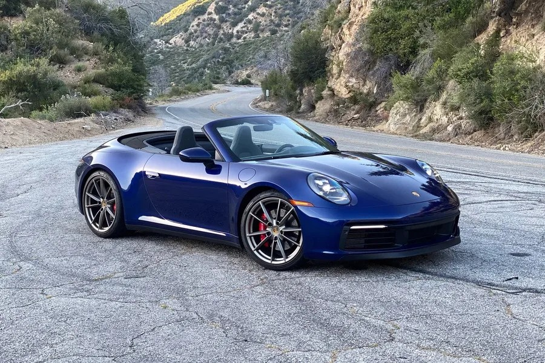

Mi favorito: Porsche 911 Carrera
Su silueta casi no ha cambiado en décadas y por eso se reconoce al instante.

Coches clásicos y deportivos
Bienvenido a mi proyecto sobre cuatro coches que marcaron la historia del motor.
Este proyecto tiene cuatro coches que encantan solo al ver, por su diseño y por lo que son en la historia de los coches. Mi favorito es el Porsche 911 Carrera, un deportivo que lleva décadas siendo un icono.
Los otros tres son el Ferrari F40, el Jaguar E-Type y el Lamborghini Countach, coches que marcaron una época y que hoy son coches de coleccionista.
Su silueta casi no ha cambiado en décadas y por eso se reconoce al instante.

Ferrari & Lamborghini representan la fuerza italiana, mientras que el Jaguar E-Type aporta la elegancia británica. ¡Hoy muchos de estos coches se venden por más de 100.000 €!
El Porsche 911 Carrera es el coche que mejor une diseño y deportividad. Cada vez que lo veo me parece moderno, aunque su forma sea muy antigua.
Francisco Martinez, autor de esta página, estudiante de 1.º de DAM.
Marca ........ Porsche Modelo ....... 911 Carrera Origen ....... Alemania Tipo ......... Deportivo Motor ........ Bóxer de 6 cilindros, trasero Debut 911 .... 1963
El nombre Carrera recuerda a la Carrera Panamericana, una competición en la que Porsche ganó en su categoría a principios de los años 50.
El Ferrari F40, con 324 km/h y 478 CV según mi catálogo.
Solo con HTML y CSS. Por ejemplo, la lista de coches usa las etiquetas <ul> y <li>, y cada coche del catálogo es un <article>.
¿Quieres preguntarme algo o sugerirme otro coche? Escríbeme desde la página de contacto.